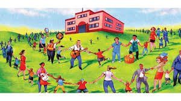
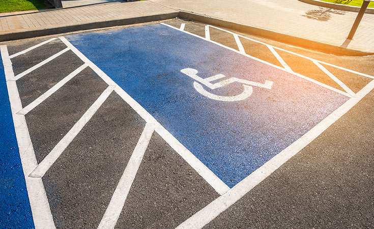
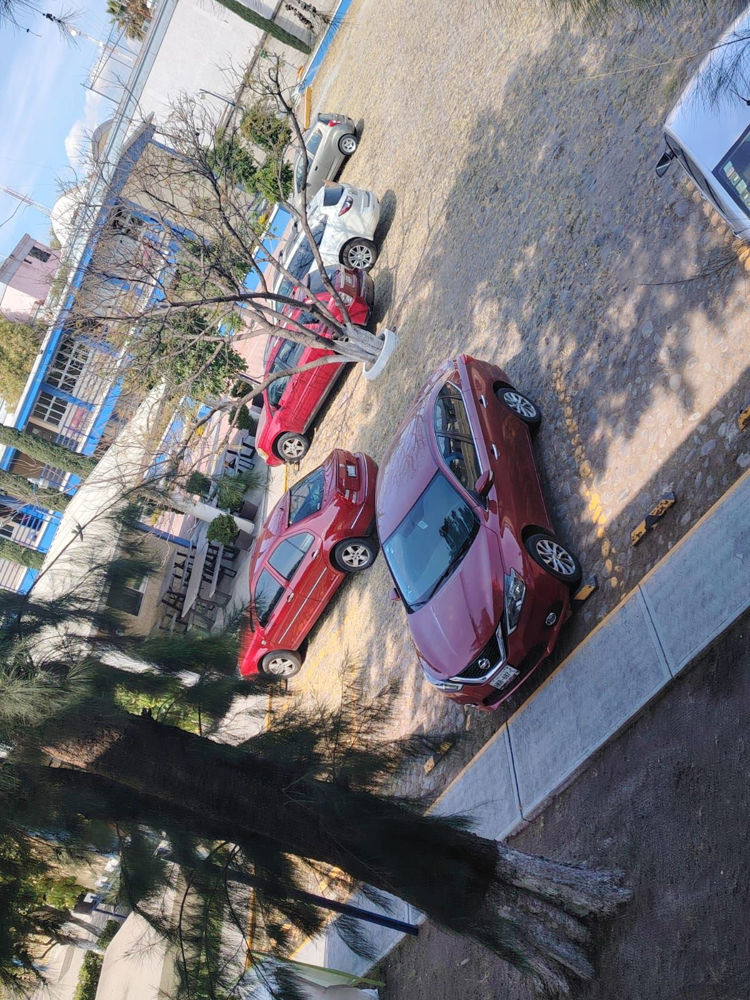
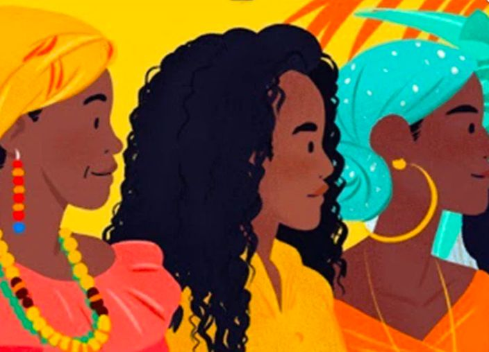
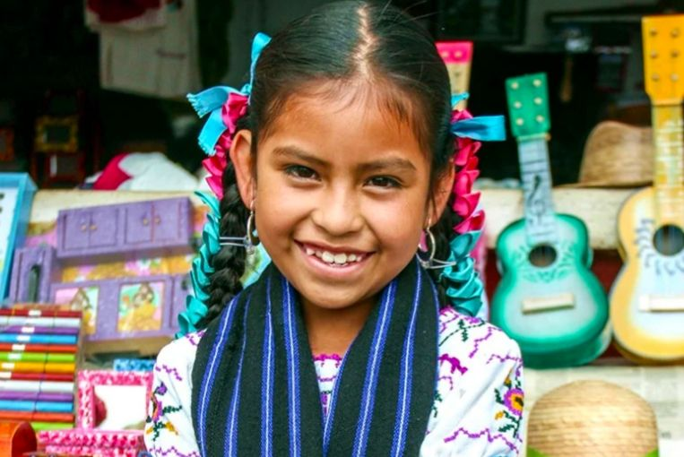
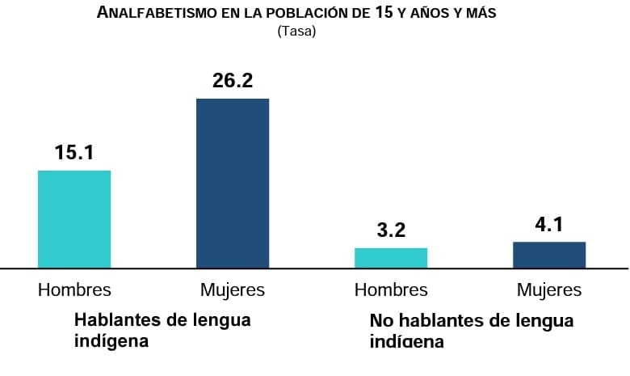
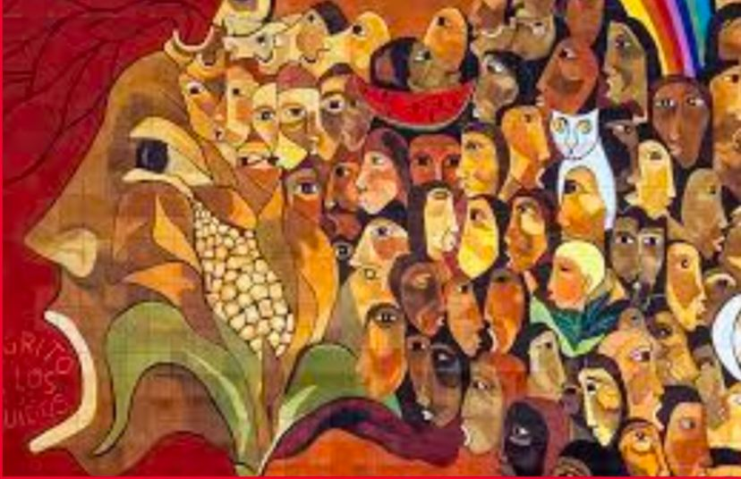
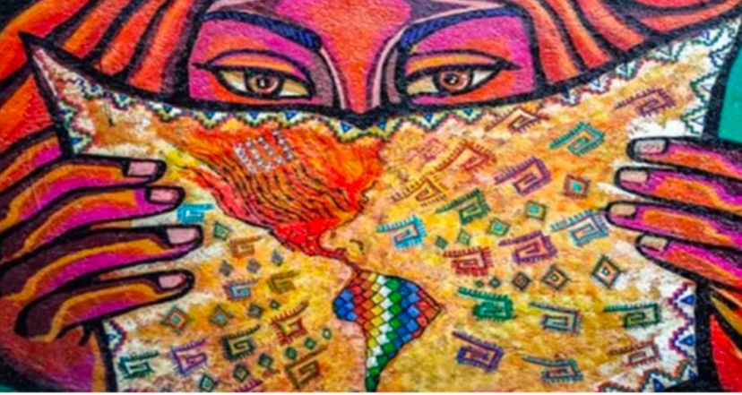
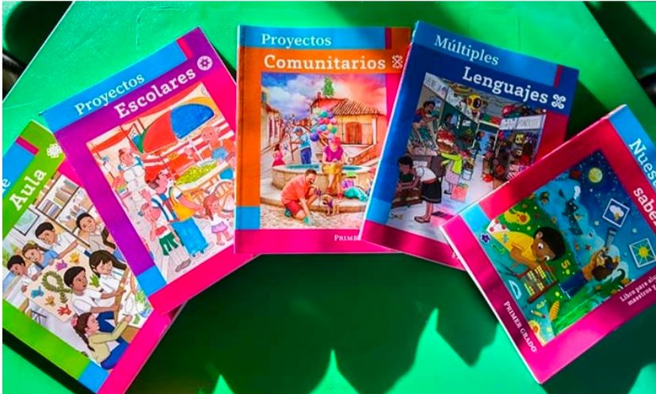
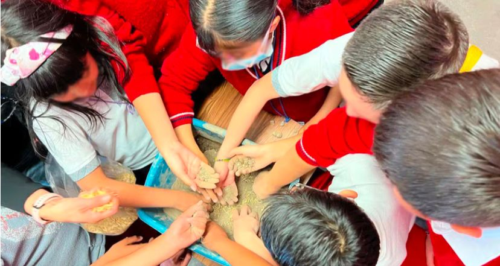

Ilustración niños, jóvenes y adultos interactuando entre todos.
Socializando a la comunidad
La escuela actúa como un lugar de sociabilización que busca poder adaptar a las niñas, niños y adolescentes a su comunidad, según Díaz (1988) podemos entender a la sociabilización cómo una transformación de un sujeto social a una identidad cultural, ambos conceptos (socialización y sociabilización) tienen como objetivo insertar a los sujetos en la sociedad. La diferencia radica en que en la socialización aprenden normas para que el individuo se adapte a la sociedad; mientras que en el otro ya cuenta con una identidad y se enfoca en su adquisición de habilidades para volverlos funcionales en determinado grupo al que le toque pertenecer.
Con esto, nos colocamos ante la realidad, en la que padres de familia, profesorado y comunidad, muestran que tienen necesidad y urgencia en aportar su cultura, para su supervivencia, donde el estudiantado propicie una adaptabilidad dentro de los procesos globalizados de los sistemas previamente estructurados para una reproducción de valores, de costumbres e ideas; donde las aportaciones entre los diferentes seres humanos o los espacios que se comparten presentan una participación activa, comunicación verbal y la adquisición de destrezas.
Referencias:
Díaz, M. (1988). Socialización, Sociabilización y Pedagogía. Maguaré, pp.16, https://repositorio.unal.edu.co/bitstream/handle/unal/28360/14221-42302-1-PB.pdf?sequence=1&isAllowed=y
Comisión Nacional de los Derechos Humanos. (s/f). Personas con Discapacidad. Org.mx. Recuperado el 25 de noviembre de 2024, de https://informe.cndh.org.mx/menu.aspx?id=30068
Reflexionemos...
La CNDH, registró que de 2010-2020 se presentaron sólo 652 quejas en materia de discapacidad vinculadas al tema de educación.
¿No consideras que son pocas quejas?
Considerando la cantidad de personas que habitamos en el país y; sólo mencionando las personas con discapacidad, imagínate todas aquellas que son excluidas por etnia, raza, género y todas aquellas que no son mencionadas.
¿Inclusión o exclusión?
La Nueva Escuela Mexicana busca reducir las brechas desiguales existentes en la población mexicana por medio de una educación inclusiva, comunitaria y crítica con el entorno, dos antecedentes importantes en su conformación fueron la pandemia por el virus del SARS-CoV y los resultados del sistema educativo enfocados a las demandas del mercado neoliberal.
La pandemia dejo ver las desigualdades existentes en la población mexicana, debido al sistema capitalista en el que vivimos pues, se observaron las dificultades que tuvieron algunos alumnos para poder seguir con sus clases ya que no todos tenían acceso a las tecnologías, sobre todo la población indígena, afromexicana y personas con discapacidad que sufren vulnerabilidad estando dentro del sistema educativo pues este termina expulsándolos al no contar con las herramientas necesarias para poder llevar a cabo su aprendizaje.

Figura 2. Medidas de cajón de estacionamiento adecuadas

Figura 3. Cajón de estacionamiento inadecuado
En la foto A, muestra cómo debe ser el cajón de estacionamiento. La SEP (2014), señala que las medidas son: 3.8 por 5.0 m, estar señalizados y encontrarse próximos a los accesos y el trayecto entre los cajones de estacionamiento para personas con discapacidad y los accesos, deberá estar libre de obstáculos. En la foto B, observamos que sólo hay una marcación con letrero, pero no se respeta por otros carros lo que impide el acceso a la entrada, además de no contar con rampas cercanas.
Crisis y Educación
Antecedentes para una educación inclusiva desde la NEM
AMLITO, por SantiagoRdz, (s.f.), Redbubble https://www.redbubble.com/i/sticker/AMLITO-by-SantiagoRdz/147456184.EJUG5.©
Claudia Sheinbaum, la hija del 68 que será la primera presidenta de México, por Florencia Paz (31 de agosto de 2024), Política & Prosa
La Nueva Escuela Mexicana busca reducir las brechas desiguales existentes en la población mexicana por medio de una educación inclusiva, comunitaria y crítica con el entorno, dos antecedentes importantes en su conformación fueron la pandemia por el virus del SARS-CoV y los resultados del sistema educativo enfocados a las demandas del mercado neoliberal.
La pandemia dejo ver las desigualdades existentes en la población mexicana, debido al sistema capitalista en el que vivimos pues, se observaron las dificultades que tuvieron algunos alumnos para poder seguir con sus clases ya que no todos tenían acceso a las tecnologías, sobre todo la población indígena, afromexicana y personas con discapacidad que sufren vulnerabilidad estando dentro del sistema educativo pues este termina expulsándolos al no contar con las herramientas necesarias para poder llevar a cabo su aprendizaje.
Referencias:
Cuéntame de México. (s.f.). La Población Indígena En México. https://beta.cuentame.inegi.org.mx/explora/poblacion/pueblos_indigenas/
INMUJERES. (2024). Población Afrodescendiente [Archivo PDF].
INEGI (3 de diciembre de 2021). Estadísticas a Propósito del Día Internacional de las Personas con Discapacidad

Día internacional de la mujer afro descendiente, por Bélgica Nvo Acaba, 2022.

Indicadores socioeconómicos de niñas, niños y adolescentes indígenas, por el Instituto Nacional de los Pueblos Indígenas
Además como menciona la SEP 2024 en los últimos 30 años ha predominado una educación orientada a lo que dice el mercado laboral, por lo tanto se ha reproducido y legitimado la exclusión de los sectores que no pueden adaptarse a estas demandas, por ejemplo:
De acuerdo con la página Cuéntame de México, basada en los censos del INEGI realizados en el 2020 y 2022 la población indígena que representa el 10.6% de la población total presenta dificultades para seguir estudiando. Por otro lado la población afrodescendiente en el tema de analfabetismo representa un 6.2% en las mujeres de 15 años y más, y un 4.4% para los hombres (INMUJERES, 2024).
Para la población de personas con discapacidad de 15 años y que son analfabetas representan un 19% de la población total (INEGI, 2021).
Esta información demuestra la falta de empatía que se tiene con dichos sectores y que la población ha caracterizado como inadaptados para realizar actividades tanto escolares como laborales. Por ello resaltamos la iniciativa de la Nueva Escuela Mexicana al intentar incluir a dichos sectores sin embargo recalcamos la necesidad de realizar otras medidas inclusivas por medio de un trabajo en conjunto de Estado, escuela y sociedad que modifiquen las estructuras dominantes que posibilitan la exclusión de esta y más poblaciones vulnerables.

Estadística a Propósito del Día Internacional de las Personas con Discapacidad. INEGI (3 de diciembre de 2021).
TEORÍA PEDAGÓGICA
Epistemologías del Sur y la NEM
La NEM comenzó a problematizar la contextualización del conocimiento occidental para comenzar una descolonización del saber, puesto que este incentiva las desigualdades sociales al universalizar el conocimiento sin tener en cuenta cada contexto sociocultural...
La NEM decide utilizar las epistemologías del sur, propuestas por Sousa Santos, estas dan voz a aquellos que han sido oprimidos por lo tanto, la educación se vuelve mas relevante y significativa para las y los estudiantes...

"Epistemologías del Sur" de Boaventura de Sousa Santos: aportes, limitaciones y errores

Epistemologías desde abajo. Pistas para un pensamiento crítico situado
Es importante tomar en cuenta las condiciones en las que viven las niñas, niños y adolescentes. ¿Cómo podrán las epistemologías del sur influir en la transformación de dichas situaciones?...
ESTADÍSTICA

Fotografía recuperada de: Gonzales, 2024.
El nuevo proyecto educativo, ¿utópico o realista?
Con la llegada del nuevo proyecto educativo surgieron opiniones con distintas posturas, en este apartado haremos énfasis en los criterios de profesionales a los que se entrevistaron...
La universidad de Salle entrevisto a docentes de nivel primaria de escuelas publicas y privadas, en los resultados obtenidos...
Psicología Social
¿El aprendizaje es algo individual o esta también influido por la sociedad?
Uno de los ejes fundamentales de este nuevo proyecto educativo se centra en la importancia de la relación entre individuo y sociedad...
DOCENTES EN BUSCA DE SU AUTONOMÍA PROFESIONAL
La SEP (2024) propone obtener la "autonomía profesional" del docente con la finalidad de que este ayude a integrar la institución educativa con la familiar...
¿Sabías que la educación de tus hijos está cambiando?
La Nueva Escuela Mexicana (NEM) está transformando la manera en que aprendemos y nos relacionamos...

EL UNIVERSAL, Compañía Periodística Nacional, (2024)